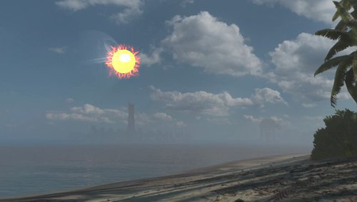
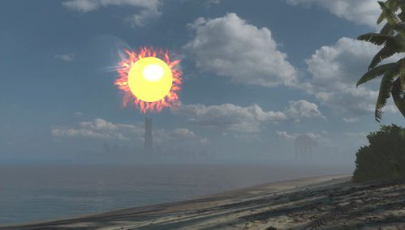

| H - Rogue One: Time to Impact |
You have been assigned to the Rogue One mission on planet Scarif. Your task is to help the rebels steal the plans of the Death Star.
Everything seemed to go well... until a great ball of fire suddenly appeared in the sky. The evil Darth Vader has fired with the Death Star directly at your position. In a few moments, you and the whole planet will be reduced to ashes.
 
A great ball of fire approaching you (left); 10 seconds later (right); and 20 seconds later... (c) Disney.
The only thing you can do now is to estimate the time to impact, how long you have left of life.
A big ball of fire is approaching you. We want to calculate the time to impact, although we do not know the size of the ball, the speed of the ball or its current distance. The only information available is a couple of images captured by an assistant robot. The first image of the ball of fire was taken at time 0, and the second image 10 seconds later. The robot has estimated the diameter of the ball in pixels in both images, using a computer vision algorithm.
Will you be able to estimate the time to impact using only the two estimated sizes in the images?
The ball is supposed to have a constant speed, and it goes directly to your position. The effect of the speed of light is considered negligible (i.e., as if it were infinite). The impact occurs when the center of the ball reaches the camera.
The input contains several test cases. The first line of the input indicates the number of test cases.
Each test case is described in a line with two positive integer numbers: A B. A is the diameter of the ball in the image at time 0, measured in pixels. B is the diameter of the ball in the image 10 seconds later, also in pixels, and it will be greater than A.
For each test case, you have to produce one output line with an integer number. This number indicates the time to impact in seconds (counting from time 0). If this number is not integer, it has to be truncated to an integer; e.g., if the value is 92.99, you have to output 92.
3
10 20
10 21
10 19
20
19
21